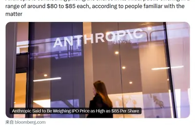
其他AI 每日新聞彙整
全部主題
其他
4 家媒體報導anthropicipofunding
史上最大 IPO：Anthropic 每股定价 83 美元，预计募资 944 亿美元超 SpaceX
IT之家 11 月 19 日消息，据彭博社今日报道，Anthropic PBC 已将首次公开募股（IPO）发行价定为每股 83 美元，高于此前公布的 70 至 78 美元发行区间。 以此计算，Anthropic 完全稀释估值约 1.5 万亿美元，仅次于 SpaceX（1.77 万亿美元），但融资规模超越 SpaceX 成为全球史上最大 IPO。 根据 Anthropic 此前向美国证券交易委员会（SEC）提交的文件，公司原计划发行 8.0135 亿股，另外由 7 名联合创始人出售 2364.86 万股，合计约 8.25 亿股。按照每股 83 美元计算，此
3 家媒體報導neongeminigoogle
Introducing Gemini 4 Neon
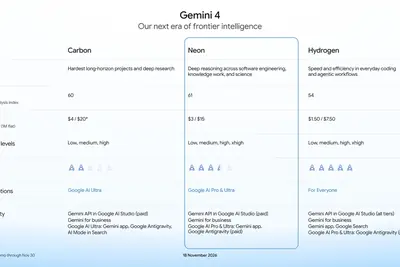
- IT之家 谷歌推出 Gemini 4 Neon 模型，AA 编程 AI 智能体指数超 Claude Opus 5.5 排第一
- Google DeepMind Introducing Gemini 4 Neon
- Hacker News (100+) Gemini 4 Neon
3 家媒體報導searchgooglefeature
Google’s AI feature in Search gets its own incognito mode
Google's new temporary threads let users have conversations in AI Mode without adding them to their search history or influencing future recommendations.
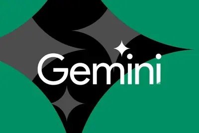
3 家媒體報導interimcolettekress
Does Nvidia Got This? Interim CEO Colette Kress Says It’s Got This
WIRED is tallying up how many times Nvidia’s interim CEO has assured everyone that the company has everything under control.
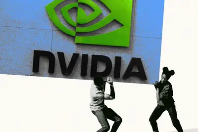
- Wired AI Does Nvidia Got This? Interim CEO Colette Kress Says It’s Got This
- Wired AI Inside Nvidia’s First Post-Jensen All-Hands: Pay Raises and More Equity
- The Verge AI Nvidia isn’t selling any more AI chips to China
- TechCrunch AI Nvidia clarifies when it will — and won’t — keep financing neoclouds
2 家媒體報導thinkdonofficials
Elon Musk says ousting Jensen Huang is like ‘kicking Michael Jordan off your team’
“I don’t think [Huang is] disloyal to the United States," Musk said.
2 家媒體報導2028tencentcompute
腾讯高管：预计 2028 年 AI 投入产出效率改善，得益于基础设施复用、硬件降价与算力效率提升
IT之家 11 月 18 日消息，据科创板日报报道，腾讯高管在业绩会上表示， 公司当前的资本开支主要用于 AI 基础设施建设 ，这类投入并非一次性消耗，而是能够形成可持续使用的基础设施，既可用于新一代模型训练，也能持续支撑 Token 生成。随着 2026 年、2027 年建设的基础设施在后续年份持续发挥作用，预计到 2028 年，相关投入带来的经营压力有望逐步缓解。 与此同时，AI 基础设施的投入成本也有望出现积极变化。2026 年设备采购价格处于相对高位，预计到 2028 年，同类设备的采购价格将明显下降。 更重要的是，模型训练和推理的计算效率正在快
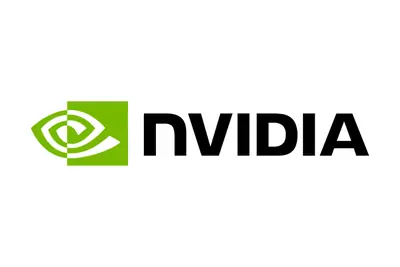
2 家媒體報導developersbuildsnapchat
Snapchat now lets developers build AR Lenses with AI assistants like Claude Code and Cursor
Lens creators can describe the Lens they want in plain language, and their AI assistant handles the process from start to finish, Snapchat says.
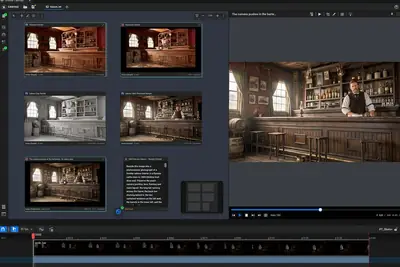
2 家媒體報導wrightmemoriesnext
Will Wright's next simulation will use AI to mine content from your memories
With MyMems , Wright says he wants to "turn the simulation inward."
2 家媒體報導chipadvancingdesign
Advancing chip design with OpenAI models
Article URL: https://openai.com/index/advancing-chip-design-with-our-models/ Comments URL: https://news.ycombinator.com/item?id=50549493 Points: 147 # Comments: 87
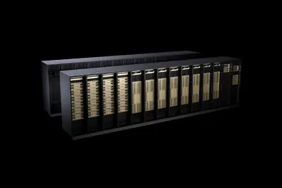
- Hacker News (100+) Advancing chip design with OpenAI models
- The Verge AI Remember the frontier AI pause? Chip companies don’t either
2 家媒體報導rtxsparkcompact
34999 元起，华硕 RTX Spark 迷你主机 ProArt GR1X 发售
IT之家 11 月 18 日消息，华硕 (ASUS) 即将于今晚 22:00 开始销售基于 NVIDIA（英伟达）RTX Spark 超级芯片的 ProArt GR1X 迷你主机。 该设备提供两档配置， 64GB + 2TB 售价 34999 元 、 128GB + 4TB 售价 54999 元 。 ProArt GR1X 三维 150×150×51 (mm)；搭载 2 风扇 4 热管 57 鳍片的散热系统， 支持 140W 性能释放 ；配备 Wi-Fi 7 & 蓝牙 5.4 无线网卡；提供 4 个 USB-C 20Gbps（其中 1 个支持 USB P
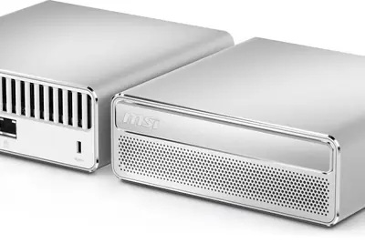
2 家媒體報導astragpt-6.26.2
OpenAI推出GPT-6.2雙模型，Astra首度達AI自我改進高風險門檻
OpenAI周二（11/17）宣布推出GPT-6.2 Astra與GPT-6.2 Sol兩款AI模型，分別鎖定複雜專業工作與日常應用。其中，Astra首次達到OpenAI訂定的AI自我改進能力高風險（High）門檻，顯示AI協助開發下一代AI系統的能力進一步提升。
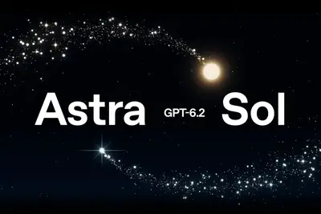
2 家媒體報導safetymicrosoftanthropic
微軟推出7款自研AI模型，以低價挑戰OpenAI及Anthropic
微軟（Microsoft）周二（11/17）在Ignite 2026大會上宣布推出7款自研AI模型，涵蓋程式開發、網路安全、影像、語音及模型決策等領域，主打以接近OpenAI與Anthropic頂尖模型的效能，提供更低的使用成本。
- iThome 微軟推出7款自研AI模型，以低價挑戰OpenAI及Anthropic
- TechOrange 科技報橘 微軟押注「小而專」AI 模型，稱 MAI Code 2 以 5% 成本達 Claude Opus 5.5 的 96% 效能
mitcsail0.016
AI界重大突破！MIT研究新發現：AI能直接修改另一個AI，不用重新訓練就能變強
MIT CSAIL研究發現，大型語言模型能直接讀懂並修改神經網路權重，只改0.016%參數就讓小模型數學準確率從7.9%升至48.1%。
verarubinasic
NVIDIA管理層無論誰掌舵 AI晶片散熱需求估只增不減
NVIDIA最新財報會議（earnings call）強調產品開發藍圖不變，Vera Rubin已順利量產出貨，挹注業界信心。台系散熱三大廠奇鋐、健策、雙鴻，對後續營運樂觀，動能不止GPU，還包括特用晶片（ASIC）伺服器。雙鴻董事長林育申指出，伺服器愈來愈熱...
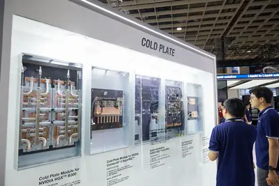
- DIGITIMES NVIDIA管理層無論誰掌舵 AI晶片散熱需求估只增不減
AI加劇載板及封測產能排擠 NVIDIA加碼押注台鏈生信心
NVIDIA領導層異動風波遇轉折，前執行長黃仁勳雖發聲願再為公司效力，董事會則公開回絕並劃清界線，不僅使新任接班人選成為關注焦點，也宣告NVIDIA加速迎來「後黃仁勳時代」。

- DIGITIMES AI加劇載板及封測產能排擠 NVIDIA加碼押注台鏈生信心
teslasdvmercedes-benz
賓士率眾圍剿Tesla訂閱戰場 同捲NVIDIA國安疑雲
軟體定義車（SDV）加速國際車廠競逐高毛利軟體訂閱商機，也捲入緊繃的美國國安審查風暴。近日，賓士（Mercedes-Benz）公布進階駕駛輔助系統（ADAS）升級計畫，將使歐、美等智駕市場進入全新賽局；卻遭美國眾議院要求在12月交代約20%中資持股對營運的...
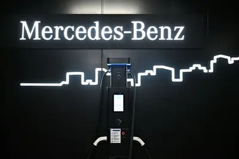
- DIGITIMES 賓士率眾圍剿Tesla訂閱戰場 同捲NVIDIA國安疑雲
NVIDIA供應鏈：不論誰接任執行長 AI迭代速度難如以往
散熱廠雙鴻是NVIDIA的散熱合作廠商之一，雙鴻董事長林育申觀察，前NVIDIA執行長黃仁勳是偏執狂，然也因為有他，AI技術持續跳躍發展，不只是每年晶片改朝換代，且架構都跟著大改，未來NVIDIA不管誰當執行長，可能都不會再有此情況。<br...
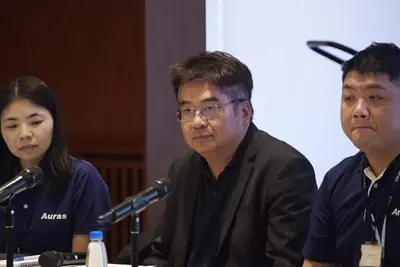
- DIGITIMES NVIDIA供應鏈：不論誰接任執行長 AI迭代速度難如以往
經濟發展首重供應鏈韌性 實證指產業集中未必是缺陷
受NVIDIA執行長黃仁勳身陷桃色風波所衍生的AI晶片非法轉運波及，外界對台灣出口與產業過度集中在IC、AI伺服器再起疑慮，認為這是雞蛋放在同個籃子，單一產業若出事，台灣經濟將隨之崩潰。學者專家實證研究發現，經濟的穩健發展雖和供應鏈韌性有關，但台灣產業集中度...
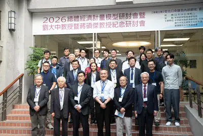
- DIGITIMES 經濟發展首重供應鏈韌性 實證指產業集中未必是缺陷
compute
美借黃仁勳風波圍堵中國AI算力 傳北京擬打稀土王牌反制
NVIDIA前執行長黃仁勳捲入婚外情及中國間諜疑雲風波，正從企業高層變動擴大為中美科技角力的新戰場。中國官方及業界人士質疑，美國可能藉此事件炒作國安疑慮，目標為進一步限制中國取得先進人工智慧（AI）晶片及海外算力資源創造政策空間。
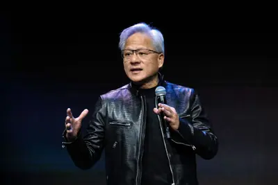
- DIGITIMES 美借黃仁勳風波圍堵中國AI算力 傳北京擬打稀土王牌反制
amydr.chip
【Amy & Dr. Chip】NVIDIA後黃仁勳時代 南韓最怕這3件事
- DIGITIMES 【Amy & Dr. Chip】NVIDIA後黃仁勳時代 南韓最怕這3件事
NVIDIA強調產品節奏不變 AI晶片供應鏈估短期衝擊有限
NVIDIA最新財報會議後，外界原本高度關注這場黃仁勳辭職之後的首次財報會議，是否會對外界好奇問題給予回應。然整體而言，此次並無給出太多意外訊息，無論營運表現與展望，還是未來的產品線發展節奏，目前觀察皆無受到影響，市場需求強度仍正向，少數政策轉向可能在於提...
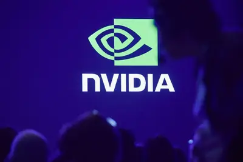
- DIGITIMES NVIDIA強調產品節奏不變 AI晶片供應鏈估短期衝擊有限
NVIDIA代理CEO收緊「AI銀行」 轉趨審慎、AI投資精挑細選
黃仁勳離任後，獲任NVIDIA代理執行長Colette Kress以「審慎」和「嚴謹」，形容公司未來將對其在人工智慧（AI）供應鏈的投資更嚴格審查。意謂此前有「NVIDIA銀行」之稱的NVIDIA，未來對全球各AI新創公司、運算服務供應商和模型開發商的投資與...
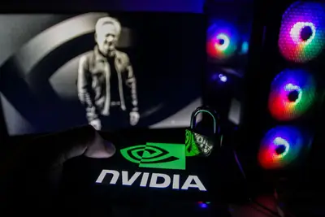
- DIGITIMES NVIDIA代理CEO收緊「AI銀行」 轉趨審慎、AI投資精挑細選
美AI管制衝擊東南亞出貨 微星估最壞影響約1個月
美國近期擴大AI產品出口管制，牽動台灣系統廠及板卡業者在東南亞的布局。微星總經理黃金請表示，東南亞部分交易已暫緩，預估對營運影響最壞約一個月。此外，針對NVIDIA創辦人黃仁勳的去留爭議，他認為短期對台灣AI供應鏈影響有限，但長期仍可能牽動產業發展。<br...
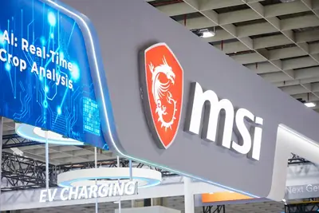
- DIGITIMES 美AI管制衝擊東南亞出貨 微星估最壞影響約1個月
osatsamsungelectronics
黃仁勳餘波與出口管制 三星代工與韓系OSAT憂接單添變數
NVIDIA黃仁勳去職餘波盪漾，波及三星電子（Samsung Electronics）晶圓代工事業與南韓封裝測試（OSAT）企業。
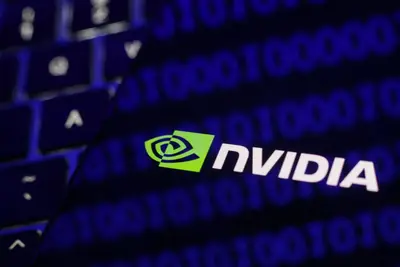
- DIGITIMES 黃仁勳餘波與出口管制 三星代工與韓系OSAT憂接單添變數
computehyperscaler
AI算力需求續擴張 NVIDIA仍有供應鏈、融資與商業化考驗
NVIDIA最新財報再次確認人工智慧（AI）基礎設施需求仍高速成長，但AI產業重心逐漸從晶片效能與算力供應，延伸至資本支出回報、融資模式、供應鏈成本及終端應用商業化。超大規模（Hyperscaler）雲端業者同時擴大投入自研晶片、推論運算需求變化，以及國際出口管...
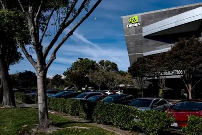
- DIGITIMES AI算力需求續擴張 NVIDIA仍有供應鏈、融資與商業化考驗
路透：川普政府擬要求美企，揭露中國 AI 模型使用情況
路透社引述 3 名知情人士獨家報導，川普政府正考慮要求美國企業，公開揭露使用中國 AI 模型的情況，希望藉此降 […]
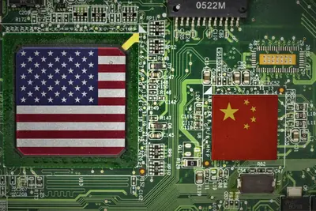
- 科技新報 TechNews 路透：川普政府擬要求美企，揭露中國 AI 模型使用情況
satyanadellamicrosoft
Microsoft CEO Satya Nadella remains confident in Nvidia after Huang’s exit
Microsoft CEO Satya Nadella expressed confidence in Jensen Huang's successor Colette Kress, who is serving as Nvidia's interim CEO.
spacexxaidealbook
马斯克“怒怼”奥尔特曼：SpaceX 预计不会从 OpenAI 处获得任何收入
IT之家 11 月 18 日消息，SpaceX CEO 埃隆 · 马斯克出人意料地透露，公司在业务预测中 并未考虑来自 OpenAI 的任何收入 。此前，OpenAI CEO 萨姆 · 奥尔特曼谈及半导体行业可能重复计算 AI 芯片需求的问题。 两人长期以来一直在 OpenAI 的发展定位上存在分歧。奥尔特曼暗示市场可能存在一定程度的产能过剩，马斯克的回应则表明，他认为 AI 应用的市场需求依然强劲。 SpaceX 今年早些时候上市时披露，除建设地面数据中心外，公司还计划部署太空算力卫星星座， 进军算力基础设施市场 。 此前，奥尔特曼曾指出，数据中心建设
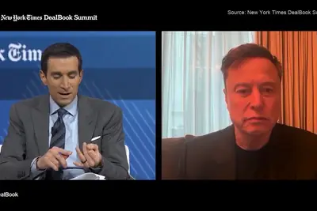
perplexitymonitorwebhook
Perplexity 推出 Monitor API，主題與網頁變動可自動追蹤並以 webhook 通知，每 1,000 次執行 1 美元
Perplexity 推出 Monitor API，開發者可用自然語言設定要追蹤的主題或網頁，系統依排程檢查並在出現相關更新時透過 webhook 通知，每 1,000 次執行收費 1 美元。
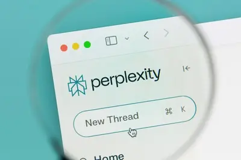
gemini
2GB 内存的手机也能流畅用 AI，谷歌降低安卓 Gemini App 使用门槛
IT之家 11 月 19 日消息，谷歌昨日（11 月 18 日）发布博文， 宣布面向 Android Go 设备开放 Gemini 应用，让内存较小的安卓手机（英文原文中并未提及具体内存容量）也能使用其个人 AI 助手。 谷歌表示通过重新设计应用架构，可以在内存较小的手机上流畅运行 Gemini 的核心体验，从而扩大其个人 AI 助手的用户群体，潜在覆盖人群达数亿人。 此次适配不仅提供基础文字问答，还涵盖语音交流、相机辅助理解和图像创作。用户可以通过 Gemini Live，以超过 45 种语言讨论问题、练习面试；也可以将相机对准笔记或表格，获取学习与翻
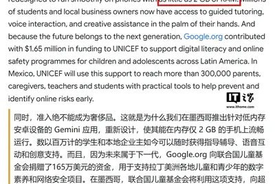
lofttransformersota
地平线发布 LoFT 原生视频几何基础模型，多项指标达到 SoTA
IT之家 11 月 19 日消息，11 月 18 日，地平线机器人实验室发布原生视频几何基础模型 LoFT（Looped Foundation Transformer for Video Geometry）。据介绍，该模型能够从 RGB 视频中联合预测相机位姿、内参及逐帧深度，恢复场景三维结构，为机器人空间感知、环境理解与具身学习提供几何基础。 官方称，LoFT 原生面向连续视频建模，采用 双循环 Transformer 架构 ，将跨帧视觉信息聚合与相机状态迭代优化相结合，用于挖掘视频中的时序关联与多视角几何信息。 IT之家从官方公布信息获悉，第一循环通
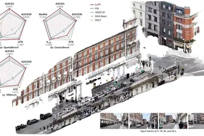
robotforbes
機器人握得住手卻給不了安慰，共感是 AI 學不會的人類超能力
《富比士》（Forbes）於 11 月 13 日刊登的評論指出，人工智慧（AI）即使未來能更完整地解析情感連結 […]
- 科技新報 TechNews 機器人握得住手卻給不了安慰，共感是 AI 學不會的人類超能力
loopstitchbug
谷歌推出 Stitch Loop：定位永远不下班的“产品进化器”，替你盯着产品改 Bug
IT之家 11 月 19 日消息，谷歌旗下 Google Labs 昨日（11 月 18 日）推出实验性产品智能体 Stitch Loop，可连接代码库与线上实时数据，在软件发布后持续发现问题、提出改进方案并编写代码。 与完成单次任务便结束的工具不同，该智能体围绕团队设定的目标全天候运行，目标达成后仍会监测，防止相关指标再次下滑。IT之家附上相关演示视频如下： Stitch Loop 支持 180 多种集成，也可通过自定义 MCP 服务器或本地命令行上传资料。其工作流程包括发现改进机会、提供备选方案、编写代码和跟踪效果，形成持续优化循环。 在默认情况下，
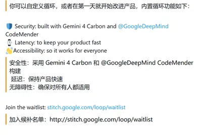
jalapeamdppa
OpenAI 发布芯片设计最新成果：AMD 旗舰 GPU PPA 最高提升 14%，自研芯片 Jalapeño 面积最高减少 13%
IT之家 11 月 19 日消息，OpenAI 于当地时间 11 月 18 日发布最新技术报告《Advancing chip design with OpenAI models》，披露了利用 AI 模型辅助芯片设计的最新进展。 据介绍，OpenAI 已将相关技术应用于自研推理芯片 Jalapeño，以及 AMD 下一代 GPU 和 CPU 的设计优化，并通过开源 RISC-V 处理器测试评估不同代际模型的芯片设计能力。 OpenAI 表示，早在 2025 年初，工程师就开始使用 GPT-4o 辅助设计 Jalapeño。即使是当时的模型，也已经能够在芯片
azurebytedanceopenai
字节跳动被曝与微软洽谈 5 亿美元 Azure 合同，惹 OpenAI 强烈不满
IT之家 11 月 19 日消息，据《The Information》今日报道，字节跳动正与微软进行深入谈判，计划额外采购约 5 亿美元 （IT之家注：现汇率约合 33.4 亿元人民币） 的 Azure 云服务，其中大部分支出将用于调用 OpenAI 的 AI 模型。知情人士称，这笔潜在交易引发了 OpenAI 对微软的不满。 此次谈判将进一步扩大字节跳动与微软现有的云服务合作规模。今年 6 月，彭博社曾报道称，字节跳动当时预计每年在微软 AI 和云服务上的支出将超过 10 亿美元 （现汇率约合 66.8 亿元人民币） 。 其争议主要集中在 OpenAI
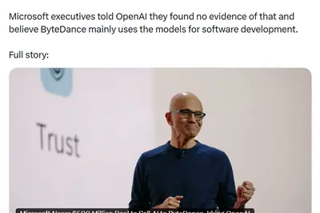
genieproject
史诗级进化！谷歌 Genie 4 世界模型开放体验：支持边玩边改天气、召唤角色，所见皆可互动
IT之家 11 月 19 日消息， 今年早些时候，谷歌推出了实验性研究原型 Project Genie，可让用户生成并探索交互式虚拟世界。 早期测试用户反馈，希望能对世界内发生的内容有更强控制力，同时拥有更便捷的建造、分享方式。 如今，谷歌面向符合资格的 Google AI Ultra 订阅用户推出全新 Project Genie 体验，让这些虚拟世界的响应速度、创意性与社交属性大幅提升。 本次更新首次开放 Genie 4 访问权限，带来 Genie 3 的全新升级、可帮助用户实现创意的 Project Genie 智能体，以及用于发现、探索、二次创作世
reportedlypricesshare
Anthropic reportedly prices IPO at $83 a share, above projected range
The long-awaited IPO reportedly values the company at $1.5 trillion on a fully diluted basis.
filingcreatedbit
Nvidia created a weird bit of intrigue by not filing a routine SEC report
One Wall Street analyst got to the bottom of Nvidia's surprise announcement that it wouldn't be filing its formal quarterly results document, the 10-Q, for weeks.
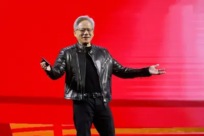
outpacingdefensesrunning
Palmer Luckey warns AI-powered cyberattacks are outpacing defenses: ‘It’s time to start running’
The Anduril co-founder says outdated technology is leaving systems vulnerable to a new wave of AI-enabled attacks.
altmansamopenai
Sam Altman warns against a future where AI, not humans, calls the shots
Sam Altman and Greg Brockman pushed back against Silicon Valley's growing debate over an AI takeover, while acknowledging the challenges of keeping advanced models under human control.
- TechCrunch AI Sam Altman says his life is so weird that he’s unfazed by Andrew Garfield portraying him in upcoming movie
- TechCrunch AI Sam Altman warns against a future where AI, not humans, calls the shots
- TechCrunch AI OpenAI CEO Sam Altman says it’s ‘hard to imagine the AI industry without Jensen’